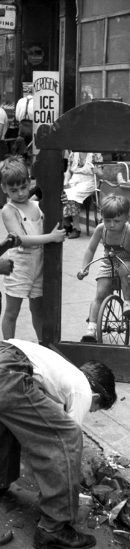
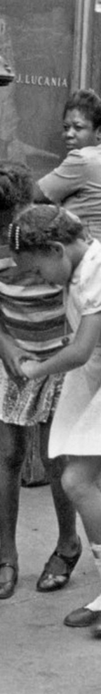
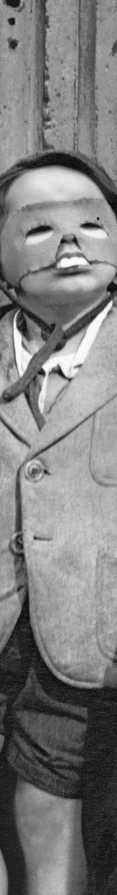

{kind=link}
{kind=link}
{kind=link}

Helen Levitt captured the lyrical spirit of a New York that no longer exists.
Attracted to the poorer areas of the city, particularly theLower East Side and Spanish Harlem, Levitt saw the street of these neighborhoods as the living room of New York, where children played, neighbors chatted, and where people from all walks of life came together for brief but special moments.
Levitt saw the street of these neighborhoods as the living room of New York...
“It was a very good neighborhood for taking pictures in those days because that was before television. There was a lot happening. And then the older people would sometimes be sitting out on the stoops because of the heat. They didn’t have air conditioning in those days. It was, don’t forget, in the late ’30s. So those neighborhoods were very active.” – Helen Levitt
Levitt (1913-2009) grew up in Bensonhurt, Brooklyn and began photographing at the age of 18. Inspired by the work of French photographer, Henri-Cartier Bresson, they became friends in 1935 and she purchased a 35mm Leica Camera with a 50mm lens.
“I had attached to my camera — I had a little device that fit on the Leica camera that they called a winkelsucher, which meant that you could look one way and take the picture the other. You could turn your camera sideways.” – Helen Levitt
Levitt began by photographingchildren playing in the streets, which was eventually released as a book in 1987 under the title, In The Street: Chalk Drawings and Messages. The portfolio showed photographs of children making chalk drawings.
Levitt focused on ordinary people, and she captured them with a kind and caring lens. Her work showed the importance of daily street life to the health and spirit of the city. As Jane Jacobs wrote, “Lowly, unpurposeful, and random as they appear, sidewalk contacts are the small change from which a city’s wealth of public life must grow,” and this spirit was at the heart of Levitt’s work.
[She] focused on ordinary people, and she captured them with a kind and caring lens.
Growing up in an immigrant family, Levitt was very aware of social and racial inequality and injustices around the city. By capturing children and streets full of diverse people, she showed how the environment of New York in the 30s and 40s could help break down these injustices and bring people together. Her photographs show children from all backgrounds playing together, unaware of the unfair, tough, and divided world around them.
...she showed how the environment of New York in the 30s and 40s could help break down these injustices and bring people together.
Levitt eventually left photography and went into filmmaking, but returned to street photography to become one of the photographers at the forefront of the shift to color photography, which had previously not been seen as a viable art form.
Looking back on Levitt’s work, the stark differences to the New York of today become even more apparent. Children play on the streets much less frequently, people walk and stare at their cellphones, ears are covered with chunky headphones. That spirit of interaction is going away, and her photographs show us why we need to fight to keep what’s left of the old spirit around.
“I go where there’s a lot of activity. Children used to be outside. Now the streets are empty. People are indoors looking at television or something.” – Helen Levitt


{kind=link}
{kind=link}
{kind=link}